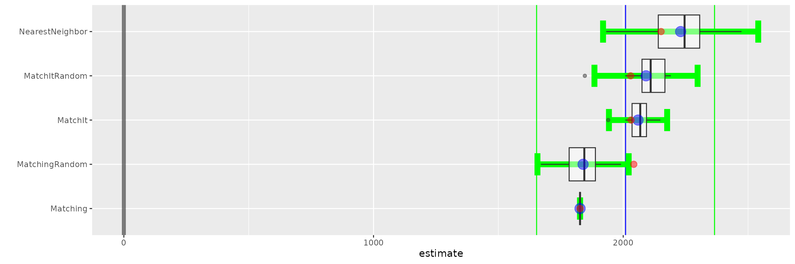
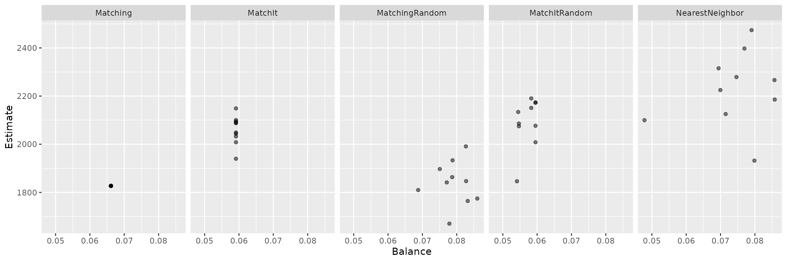

Impact of Data Order for Propensity Score Matching
Jason Bryer, Ph.D.
2023-03-22
Source:vignettes/MatchingOrder.Rmd
MatchingOrder.RmdPropensity score matching (PSM; Rosenbaum & Rubin, 1983) has
become a popular approach for adjuting for selection bias in
observational studies. However, recent studies have shown that under
certain circumstances PSM may increase bias. In particular, Lunt (2014)
showed that the order in which treated units are matched, along with
caliper specifications, can impact the estimates. This paper explores
the effects of matching order using the PSAboot package for
bootstrapping propensity score analysis using two of the more popular R
packages for matching, MatchIt (Ho, Imai, King, &
Stuart, 2011) and Matching (Sekhon, 2011).
Set the number of bootstrap samples. This should be set to at least 100 but kept small to reduce the execution time for CRAN submissions.
boot.M = 10Matching Procedures
boot.matchit.random <- function(Tr, Y, X, X.trans, formu, ...) {
boot.matchit(Tr = Tr, Y = Y, X = X, X.trans = X.trans, formu = formu, m.order = 'random', ...)
}
boot.matching.random <- function(Tr, Y, X, X.trans, formu, ...) {
boot.matching(Tr = Tr, Y = Y, X = X, X.trans = X.trans, formu = formu, replace = FALSE)
}
SimpleMatch <- function(Tr, Y, X, X.trans, formu, caliper = 0.25, ...) {
if(!is.logical(Tr)) {
Tr <- as.logical(Tr)
}
formu <- update.formula(formu, 'treat ~ .')
ps <- fitted(glm(formu, data = cbind(treat = Tr, X), family = binomial(logit)))
matches <- data.frame(Treat = which(Tr), Treat.Y = Y[Tr], Treat.ps = ps[Tr],
Control = as.integer(NA), Control.Y = as.numeric(NA),
Control.ps = as.numeric(NA))
available.Control <- !Tr
for(i in which(Tr)) {
d <- abs(ps[i] - ps[!Tr & available.Control])
if((min(d) / sd(ps)) < caliper)
m <- which(!Tr & available.Control)[which(d == min(d))]
if(length(m) > 1) {
m <- m[1]
}
if(length(m) > 0) {
matches[matches$Treat == i,]$Control <- m
matches[matches$Treat == i,]$Control.Y <- Y[m]
matches[matches$Treat == i,]$Control.ps <- ps[m]
available.Control[m] <- FALSE
}
}
match.t <- t.test(matches$Treat.Y, matches$Control.Y, paired = TRUE)
return(list(
summary = c(estimate = unname(match.t$estimate),
ci.min = match.t$conf.int[1],
ci.max = match.t$conf.int[2],
p = match.t$p.value,
t = unname(match.t$statistic)),
details = c(Matches = matches, t.test = match.t),
balance = balance.matching(matches$Treat, matches$Control, X.trans) ))
}Example 1: Lalonde
First example will use the classic lalonde data
(LaLonde, 1986; Dehejia & Wahba, 1999).
data("lalonde", package = 'Matching')Typically, bootstrapping draws M random samples with
replacement. However, by setting the control.replace and
treated.replace parameters to FALSE and the
bootstrap sample sizes equal to the number of observations we can
evaluate the impact of ordering.
lalonde.boot <- PSAboot(Tr = lalonde$treat,
Y = lalonde$re78,
X = lalonde[,c(1:8)],
seed = 2112,
M = boot.M,
control.sample.size = 260, control.replace = FALSE,
treated.sample.size = 185, treated.replace = FALSE,
methods = c(getPSAbootMethods()[c('Matching','MatchIt')],
'MatchingRandom' = boot.matching.random,
'MatchItRandom' = boot.matchit.random,
'NearestNeighbor' = SimpleMatch))## 10 bootstrap samples using 5 methods.
## Bootstrap sample sizes:
## Treated=185 (100%) without replacement.
## Control=260 (100%) without replacement.Boxplot of estimated effect sizes.
boxplot(lalonde.boot)
lalonde.bal <- balance(lalonde.boot)
tmp.bal <- melt(lalonde.bal$pooled)
tmp.est <- lalonde.boot$pooled.summary[,c('iter','method','estimate')]
tmp <- merge(tmp.bal, tmp.est, by.x = c('Var1','Var2'), by.y = c('iter','method'))
ggplot(tmp, aes(x = value, y = estimate, group = Var2)) + geom_point(alpha = .5) +
facet_wrap(~ Var2, nrow = 1) + xlab('Balance') + ylab('Estimate')
Exmaple 2: Tutoring
data(tutoring, package = 'TriMatch')
tutoring$treatbool <- tutoring$treat != 'Control'
tutoring.boot <- PSAboot(Tr = tutoring$treatbool,
Y = tutoring$Grade,
X = tutoring[,c('Gender', 'Ethnicity', 'Military', 'ESL',
'EdMother', 'EdFather', 'Age', 'Employment',
'Income', 'Transfer', 'GPA')],
seed = 2112,
M = boot.M,
control.sample.size =918, control.replace = FALSE,
treated.sample.size =224, treated.replace = FALSE,
methods =c(getPSAbootMethods()[c('Matching','MatchIt')],
'MatchingRandom' = boot.matching.random,
'MatchItRandom' = boot.matchit.random,
'NearestNeighbor' = SimpleMatch))## 10 bootstrap samples using 5 methods.
## Bootstrap sample sizes:
## Treated=224 (100%) without replacement.
## Control=918 (100%) without replacement.
boxplot(tutoring.boot)
tutoring.bal <- balance(tutoring.boot)
tmp.bal <- melt(tutoring.bal$pooled)
tmp.est <- tutoring.boot$pooled.summary[,c('iter','method','estimate')]
tmp <- merge(tmp.bal, tmp.est, by.x = c('Var1','Var2'), by.y = c('iter','method'))
ggplot(tmp, aes(x = value, y = estimate, group = Var2)) + geom_point(alpha = .5) +
facet_wrap(~ Var2, nrow = 1) + xlab('Balance') + ylab('Estimate')References
Daniel E. Ho, Kosuke Imai, Gary King, Elizabeth A. Stuart (2011). MatchIt: Nonparametric Preprocessing for Parametric Causal Inference. Journal of Statistical Software, Vol. 42, No. 8, pp. 1-28. URL https://www.jstatsoft.org/v42/i08/
Jasjeet S. Sekhon (2011). Multivariate and Propensity Score Matching Software with Automated Balance Optimization: The Matching Package for R. Journal of Statistical Software, 42(7), 1-52. URL https://www.jstatsoft.org/v42/i07/.
Lunt, M. (2014). Selecting an appropriate caliper can be essential for achieving good balance with propensity score matching. Practice of Epidemiology, 179(2), 226-235.